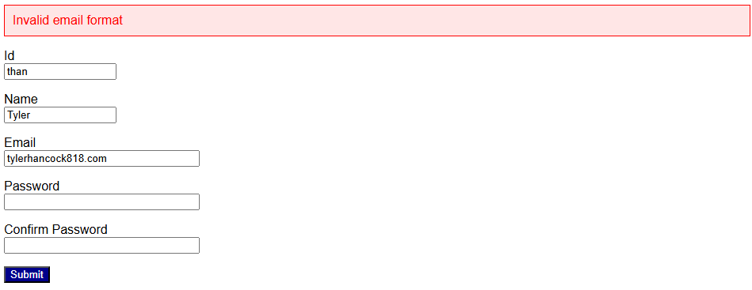
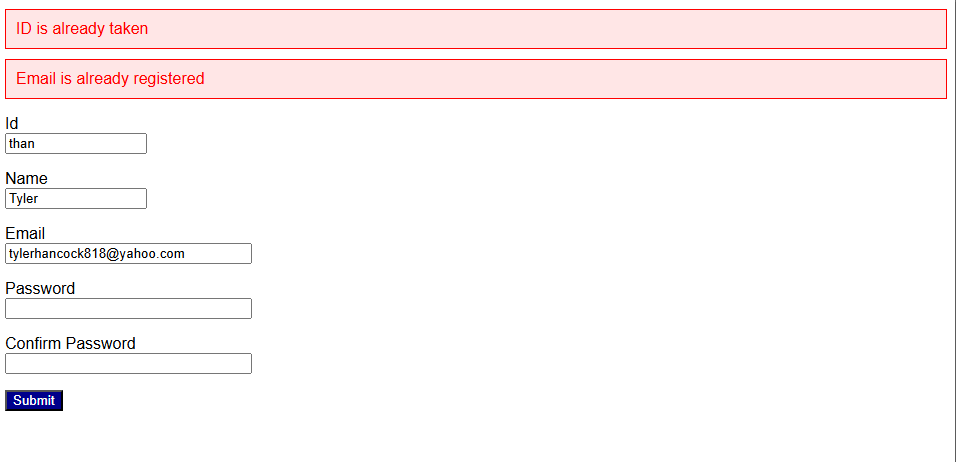
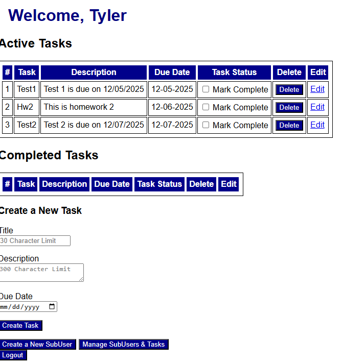
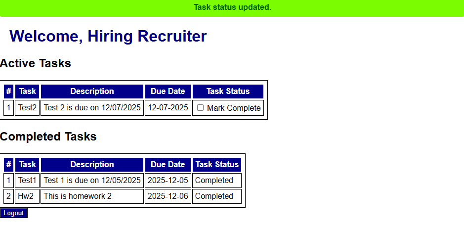
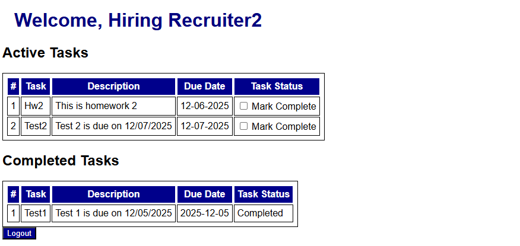
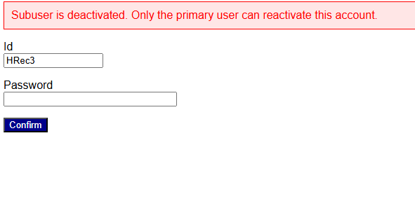
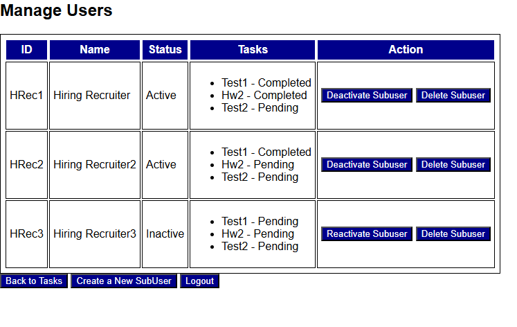

This was a project completed in a team environment with the goal of creating a web-based task management system while learning to utilize
REST Apis, Flask, and SQLite. The graphic design of this project is not appealing, but bettering our understanding with the aforementioned
was the goal of the project. This project was built using Python with Flask for the backend,
HTML/CSS for the frontend, and SQLite for the database management. We were able to practice form authentication, CRUD operations, building REST APIs,
and simple security designs.
Below are two images showcasing some of our implemented error handling. The first image shows an invalid email being entered, while the second image shows an attempt to register with an ID and email that are already in use. These apply to sub user creation as well.


Here you can see a main users page layout with options to create a new sub user, manage existing sub users, create, edit and delete tasks, and log out of the system. When a sub user is created, their password is automatically generated as the primary users id concatenated with the first 3 letters of the sub users name.

Sub users have a simple layout only being able to view tasks created by their primary user, logout, and mark tasks as complete. They do not have the ability to create, edit, or delete tasks. If a sub user is deactivated by the main user, they are shown a message indicating such and are unable to log in again until reactivated by the main user.



When a main user goes to manage their sub users, they are presented with a list of their created sub users, the sub user's active status, options to activate, deactivate, or delete accounts, and see each sub user's completed tasks.
